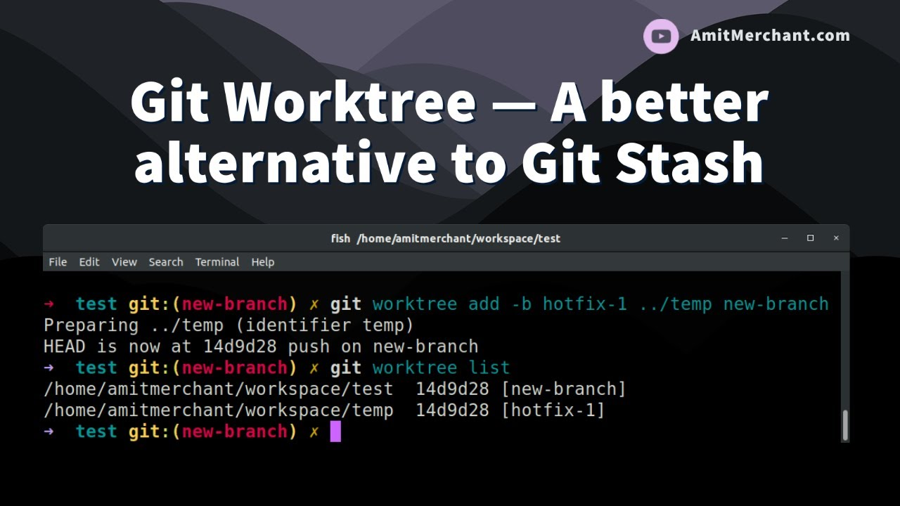
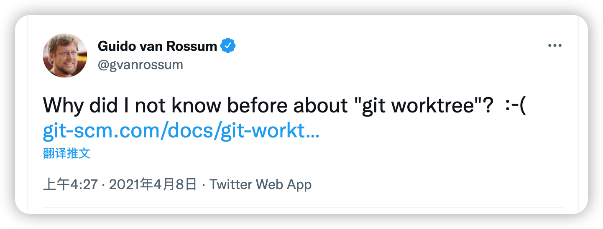
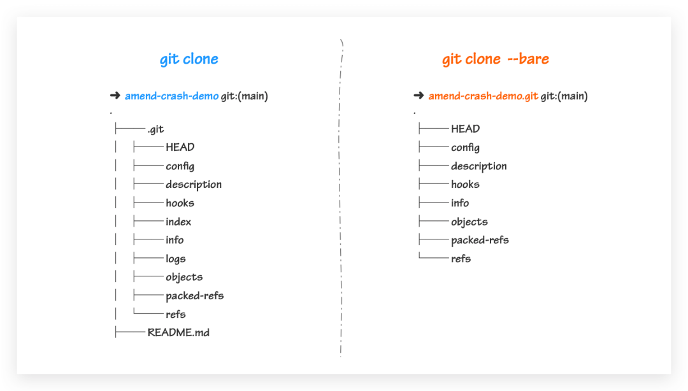

学会之后，发现 git worktree 很好用，赞 👍
git worktree 严格意义上说已经不是一个新的功能了，它推出也已经好几年了，是在 2015 年 7 月发布的 2.5 版引入的。Worktree 是链接到统一仓库的多个工作区。一个 git 仓库可以支持多个工作树，分别对应不同的分支。

之前在 Twitter 上面看到 Guido van Rossum 发了一个推文，说自己为什么之前不知道 git worktree 这个用法呢？这就勾起了我的求知欲，因为平常工作中也没有遇到需要使用该命令的常见(不然我也不会现在还不知道，也有可能需要使用，但是我不知道这个命令，逃)。

说到 git worktree 这个命令，必不可少需要介绍 git stash 这个命令。想必这个命令平常都有使用或者涉及吧！
- [1] git stash
使用到该命令，一般都是在当前分支正在开发，突然需要切到其他分支修改 bug 或者处理问题时使用。可以使用 git stash 命令把你当前的工作分支里的修改暂存起来，然后在切换到其他分支处理问题，等处理完成之后再切换到之前的分支，使用 git stash pop 把你之前的修改弹出，继续你之前未完成的工作。
# dev
$ git status
$ git add . && git stash
# hotfix
$ git checkout hotfix
$ git add . && git commit -a "fix"
$ git merge --no--ff master
# dev
$ git checkout dev
$ git stash pop
- [2] git worktree
而该命令也可以解决上述问题的功能，而且灵活使用的话，还会很方便。还是按照上述的逻辑进行分支切换和问题处理，可以通过该命令创建一个新的 worktree 目录。现在想暂时去 stable 分支工作的话，直接 cd 过去就可以了。创建的工作目录最好在主仓库目录之外，免得污染仓库。

# 该项目上层创建新目录
$ git worktree add ../2022-stable stable
# 会产生一个新目录且其为stable分支
$ ls -lhd ../
drwxr-xr-x 32 escape staff 1.0K Apr 25 15:22 2022
drwxr-xr-x 25 escape staff 800B May 1 18:21 2022-stable
# 发现其大小相比于原仓库非常的小
$ du -sh ../2022-stable
488K ../2022-stable
# 可以看到创建的分支和文件路径
$ git worktree list
/Users/escape/github/2022 12562ec [dev]
/Users/escape/github/2022-stable 23f048b [stable]
# 去stable分支工作喽
$ cd ../2022-stable
# 对应的分支不需要了
$ git worktree remove 2022-stable
- [3] bare repo
我们知道，通常创建的 worktree 目录位置一般不会在当前项目下，对于强迫症的人来说就十分难受了，所以这里我们就需要使用 bare repo 来解决这个问题了。
要想生成一个 bare repo 也很简单, 只需在下面两个命令的基础上加上 --bare 参数就可以了。从下面这张图可以知道，bare repo 仅仅包含 Git 相关信息(.git)，并不包含我们的实际代码文件、目录信息，这也就导致它不能像 non-bare repo 那样执行 add/commit/pull/push 操作了。
$ git init --bare
$ git clone --bare https://github.com/escapelife/2022.git

我们可以简单理解 bare repo 就是一个 Git 空壳，正因为这些特性(不能对它进行更改)，也就避免 repo 里面的内容被弄的一团糟，所以可以被用来做私有的中心化 repo。借助 bare repo 的特性，来优化同时在多个分支工作的方式。
# 以bare的形式clone项目代码
$ git clone --bare git@github.com:escapelife/2022.git .bare
# 当前目录下创建一个.git文件
# 以gitdir的形式指向我们的.bare文件夹
$ echo "gitdir: ./.bare" > .git
# 确保我们创建worktree切换分支时可以显示正确的分支名称
$ vim .bare/config
[remote "origin"]
url = git@github.com:escapelife/2022.git
fetch = +refs/heads/*:refs/remotes/origin/*
# 这样我们创建出主分支/也可以在其他分支上面工作
$ git worktree add main
$ git worktree add -b "feature/issue-510" feature
# 查看有两个同级目录了
$ git worktree list
/Users/escape/github/test/.bare (bare)
/Users/escape/github/test/feature 1234567 [feature/issue-510]
/Users/escape/github/test/main 1234567 [main]
- [4] summarize
这样的好处在于，当我们的仓库需要多个分支同时维护的时候(某种需求导致)，这样时候就不用新建两个项目(git clone)来拉代码了，来分别维护了(切换分支还是很费劲的，尤其是对于分支差异很大的时候，会很慢的)。这个时候，使用 git worktree 就派上用场了。其既保证了多分支的同时维护，有保证了 worktree 出来的目录磁盘空间尽可能的小(macOS 磁盘空间可谓是寸土寸金)。
| 编号 | 命令 | 含义 |
|---|---|---|
| 1 | git worktree add ../工作树目录名称 分支(commits ID) |
创建一套完整分支工作区 |
| 2 | git worktree list (--porcelain) |
列出每个工作树的详细信息(列出更完整的哈希值和分支信息) |
| 3 | git worktree move 2022-stable ../2022-stable-new |
将工作树移动到新目录(不能移动包含子模块的主工作树) |
| 4 | git worktree prune |
清除 $GIT_DIR/worktrees 中的工作树信息。 |
| 5 | git worktree remove (--force) |
用户删除工作树(只能删除干净的工作树且主工作树无法删除) |
| 6 | git worktree lock |
防止其管理文件被自动删除 |
| 7 | git worktree unlock |
对锁定工作中的树进行解锁 |